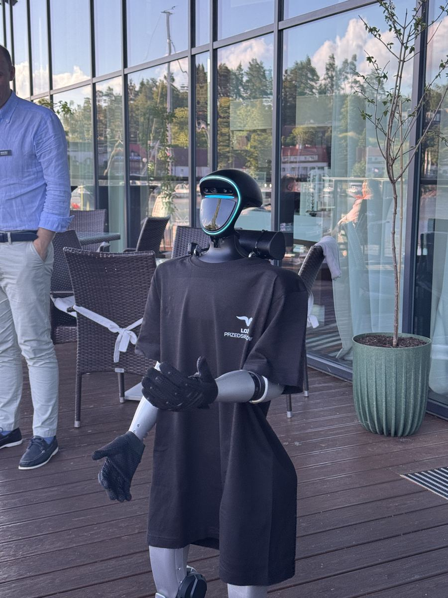

- Pradžia
- Renginių gidas
- Įmonės renginio organizavimas
Įmonių renginiai · Planas · Biudžetas
Įmonės renginio organizavimas: planas, biudžetas ir klaidos
Įmonės renginys gali būti padėka darbuotojams, komandos stiprinimas, klientų vakaras ar produkto pristatymas — ir kiekvienam iš jų reikia kitokio plano. Šiame gide: kaip nustatyti tikslą, paskirstyti biudžetą, išsirinkti vietą ir programą, laiko planas nuo trijų mėnesių iki renginio dienos ir klaidos, kurios kartojasi kasmet.

Pradėkite nuo tikslo
Prieš ieškodami salės atsakykite, ko iš renginio norite. Kiekvienas tikslas veda prie kitokio formato, vietos ir biudžeto paskirstymo:
- Padėkoti darbuotojams. Svarbiausia atmosfera ir jausmas, kad renginys skirtas jiems, o ne vadovybei. Daugiau bendravimo, mažiau oficialių kalbų.
- Sustiprinti komandą. Bendra veikla, kurioje susitinka skirtingi skyriai, — idėjų rasite gide komandos formavimo idėjos.
- Pakviesti klientus ar partnerius. Reikia priežasties atvykti ir temos pokalbiams — dažnai tai technologinis akcentas ar įdomus pranešėjas.
- Pristatyti produktą. Viskas sukasi apie vieną momentą ir turinį, kuris vėliau plinta žiniasklaidoje ir socialiniuose tinkluose.
- Sukurti turinio prekės ženklui. Renginys trunka vakarą, o nuotraukos ir vaizdo įrašai — mėnesius. Kaip tai išnaudoti, rašome straipsnyje employer branding renginiai.
Klasikinė klaida — biudžetas ir programa sudaromi pagal praėjusius metus su nedidele korekcija. Rezultatas: renginys panašus į praėjusį, o klausimas „kam mes tai darome?“ lieka neatsakytas.
Dažniausi įmonių renginių formatai
| Formatas | Kada | Kas svarbiausia |
|---|---|---|
| Kalėdinis vakarėlis | Gruodis | Padėka, metų apdovanojimai, šventinė nuotaika |
| Vasaros šventė | Birželis–rugpjūtis | Lauko veiklos, šeimos, neformalus bendravimas |
| Įmonės gimtadienis ar jubiliejus | Pagal įmonės istoriją | Istorija, padėka partneriams, ilgalaikiai darbuotojai |
| Komandos formavimas | Bet kuriuo metu | Bendra veikla, skyrių susitikimas |
| Konferencija ar seminaras | Pavasaris, ruduo | Turinys, pranešėjai, kontaktai |
| Klientų vakaras | Ruduo, žiema | Priežastis atvykti, pokalbių temos |
| Produkto pristatymas, atidarymas | Pagal paleidimo datą | Vienas ryškus momentas ir turinys žiniasklaidai |
Kaip paskirstyti biudžetą
Tipinis įmonės renginio biudžetas skirstomas maždaug taip. Tai ne taisyklė, o atskaitos taškas, nuo kurio verta pradėti:
| Eilutė | Įprasta dalis | Pastaba |
|---|---|---|
| Vieta ir techninis aptarnavimas | ~30–40 % | Dažnai permokama už prestižą, kurio svečiai nepastebi |
| Maistas ir gėrimai | ~25–35 % | Būtina, bet retai tampa priežastimi prisiminti renginį |
| Programa ir pramogos | ~10–20 % | Būtent čia sukuriamas įsimenamas momentas |
| Turinys ir komunikacija | ~5–10 % | Fotografas, videografas, kvietimai — dažniausiai apleidžiama eilutė |
| Rezervas | ~10 % | Beveik visada prireikia |
Dažniausia disproporcija — dosnus maistas ir minimali programa. Patogu skaičiuoti ir kainą vienam dalyviui: programa, kuri atrodo brangi, padalyta šimtui žmonių dažnai kainuoja mažiau nei taurė vyno kiekvienam.
Kur pinigai dažniausiai švaistomi
- Brangi vieta be poveikio. Prestižinė salė mažai keičia patirtį, jei programa silpna. Kuklesnė erdvė ir stipri programa duoda daugiau už tuos pačius pinigus.
- Suvenyrai, kuriuos išmeta. Dalis dovanėlių lieka ant stalų. Tie patys pinigai, skirti vienam įsimenamam momentui, dirba geriau.
- Nulinis turinio biudžetas. Jei niekas nefilmuoja, renginys dingsta kitą dieną — kartu su vidinės komunikacijos ir employer branding galimybėmis.
Vieta
Vietą lemia svečių skaičius, formatas ir logistika. Patikrinkite, ar lengva atvykti viešuoju transportu ar yra parkavimas, ar užtenka vietos scenai ir šokiams, kokia techninė įranga įeina į kainą, iki kada galima triukšmauti ir ar galima atsivežti savo tiekėjus — dekoratorius, šou atlikėjus, fotobūdelę. Vasaros šventei būtinas planas B lietui.
Programa ir pramogos
Programa, kurią darbuotojai prisimena, beveik visada turi vieną stiprų akcentą ir gerą foną, o ne penkis vidutinius punktus:
- Trumpa oficialioji dalis. Iki 10–15 minučių. Ilgesnė atima vakaro energiją, kurios paskui nebeatgausite.
- Priežastis atvykti laiku. Kažkas prie įėjimo — pramoga, fotozona ar netikėtas personažas, — kad vakaras prasidėtų nuo emocijos, o ne nuo eilės prie rūbinės.
- Vienas akcentas. Šou, apdovanojimai, staigmena — momentas, apie kurį kalbės kitą dieną. Idėjų rasite gide šou programa renginiui ir pramogos renginiams.
- Vedėjas. Didesniame renginyje jis sujungia programą į vientisą vakarą — apie tai gide renginių vedėjas.
- Laikas bendrauti. Programa neturi užimti kiekvienos minutės.
Agentūra ar patys?
Renginių agentūra verta, kai renginys didelis, trunka kelias dienas, vyksta kitame mieste ar reikia daug tiekėjų vienu metu. Agentūra suderina vietą, programą, techniką ir laiko planą, o jūs gaunate vieną atsakingą kontaktą. Patys galite suorganizuoti mažesnį vakarą, jei paskiriate vieną atsakingą žmogų, aiškiai paskirstote darbus ir laiku užsakote pagrindinius tiekėjus.
Laiko planas
| Kada | Ką padaryti |
|---|---|
| Prieš 3 mėnesius | Tikslas, biudžetas, data, svečių skaičius; vietos rezervacija |
| Prieš 2–3 mėnesius | Vedėjas, muzika, pagrindinis programos akcentas, fotografas |
| Prieš 6–8 savaites | Kvietimai darbuotojams, meniu, dekoras, transportas |
| Prieš 3–4 savaites | Galutinis scenarijus su laikais, techniniai poreikiai, dalyvių sąrašas |
| Prieš savaitę | Patvirtinimai visiems tiekėjams, sodinimo planas, planas B |
| Renginio dieną | Vienas koordinatorius, visų tiekėjų kontaktai vienoje vietoje |
| Po renginio | Padėka, nuotraukos darbuotojams, trumpa apklausa, rezultatų įvertinimas |
Kalėdiniam vakarėliui viskas paslenka anksčiau: populiariausios gruodžio datos užsipildo jau rudenį. Visą kalėdinio vakarėlio planą rasite gide kalėdinio vakarėlio idėjos.
Kaip įvertinti rezultatą
Renginio poveikį galima išmatuoti paprastais rodikliais: kiek darbuotojų dalyvavo ir kaip vertino renginį trumpoje apklausoje, kiek įrašų apie renginį pasirodė socialiniuose tinkluose, kiek kontaktų surinkta B2B renginyje ir kiek nuotraukų bei vaizdo įrašų liko tolesnei komunikacijai. Šie skaičiai padeda kitais metais pagrįsti biudžetą ne praėjusių metų suma, o rezultatu.
Dažniausios klaidos
- Per vėlai pradėta. Geriausios salės ir atlikėjai užsakomi pirmi.
- Per ilga oficialioji dalis. Trys pranešėjai po 15 minučių — ir salė jau pavargusi.
- Viskas vienam žmogui. Organizatorius, kuris pats ir veda, ir sprendžia techniką, renginio nemato.
- Pamiršti tie, kas negeria ar turi vaikų. Alternatyvūs gėrimai, transportas namo, šeimų formatas vasarą.
- Nėra turinio plano. Be fotografo ir kelių suplanuotų kadrų renginys dingsta kitą dieną.

Robotas įmonės renginyje
Humanoidinis robotas su jūsų logotipu ir QR kodu ant krūtinės pasitinka darbuotojus ar klientus prie įėjimo, pristato vadovo žodį ar apdovanojimų laimėtojus, šoka su komanda ir tampa fotozona. Jis kalba lietuviškai ir bet kuria kita kalba, todėl tinka ir tarptautinėms komandoms. Visą laiką dirba mūsų sertifikuotas operatorius, o jums nereikia rūpintis jokiais techniniais dalykais.
Visa renginio diena kainuoja nuo 2 100 € be PVM, trumpesnis pasirodymas įkainojamas individualiai, rezervacija — be avanso, o sąskaitą išrašome po renginio. Plačiau — robotas įmonės šventei ir robotas konferencijai.
Dažniausi klausimai
Nuo tikslo, ne nuo datos ir vietos. Kai žinote, ar renginys skirtas padėkoti darbuotojams, sustiprinti komandą, pakviesti klientus ar pristatyti produktą, programa, vieta ir biudžeto paskirstymas susidėlioja daug greičiau.
Praktikoje apie 10–20 %. Mažiau nei 10 % dažniausiai reiškia, kad renginys bus malonus, bet neįsimenamas: svečiai pavalgo ir išsiskirsto, o apie renginį nelieka ką pasakoti.
Rugsėjį–spalį. Gruodžio penktadieniai ir šeštadieniai populiariausiose salėse, pas vedėjus ir atlikėjus užsipildo pirmiausia, todėl lapkritį pasirinkimas jau gerokai mažesnis.
Kai renginys didelis, vyksta kelios dienos ar reikia daug tiekėjų vienu metu — dažniausiai taip. Mažesnį vakarą įmonė gali suorganizuoti ir pati, jei paskiria vieną atsakingą žmogų ir turi aiškų planą.
Rodikliais: kiek darbuotojų dalyvavo ir kaip vertino, kiek įrašų pasirodė socialiniuose tinkluose, kiek kontaktų surinkta B2B renginyje ir kiek medžiagos liko tolesnei komunikacijai.
Dažnai taip. Geresnis renginys mažesnei grupei duoda daugiau nei vidutiniškas visiems — ypač kai tikslas yra padėka ar komandos stiprinimas.